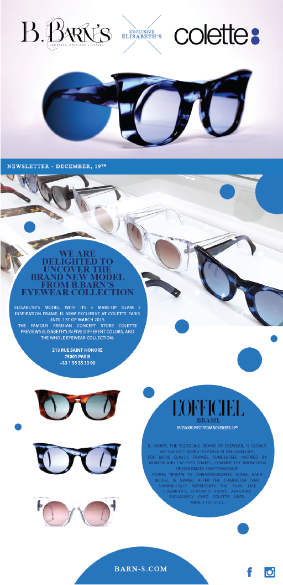

<!DOCTYPE html>
<html lang="en">
  
<!-- Mirrored from asifmajeed.com/projects/tescom-desktop/barns.html by HTTrack Website Copier/3.x [XR&CO'2014], Wed, 10 Jul 2019 01:45:11 GMT -->
<!-- Added by HTTrack --><meta http-equiv="content-type" content="text/html;charset=UTF-8" /><!-- /Added by HTTrack -->
<head>
    <meta charset="utf-8">
    <meta http-equiv="X-UA-Compatible" content="IE=edge">
    <meta name="viewport" content="width=device-width, initial-scale=1">
    <!-- The above 3 meta tags *must* come first in the head; any other head content must come *after* these tags -->
    <title>Mikmak</title>

    <!-- Style -->
    <link href="css/style.css" rel="stylesheet">
    <link rel="stylesheet" href="css/nivo-slider.css" type="text/css" media="screen" />

    <!-- HTML5 shim and Respond.js for IE8 support of HTML5 elements and media queries -->
    <!-- WARNING: Respond.js doesn't work if you view the page via file:// -->
    <!--[if lt IE 9]>
      <script src="https://oss.maxcdn.com/html5shiv/3.7.2/html5shiv.min.js"></script>
      <script src="https://oss.maxcdn.com/respond/1.4.2/respond.min.js"></script>
    <![endif]-->
  </head>
  <body>
 	<div class="wrapper">
    	<!-- banner -->
        <div class="main-banner" data-parallax="scroll" data-image-src="images/barns-banner.png">
        	<div class="logo">
            	<a href="#"></a>
            </div>
            <div class="cross-btn">
            	<a href="#"></a>
            </div>
            <div class="clear"></div>
         </div>
    	
        <!-- Content -->
        <div class="content">
        	<div class="site-container">
            	<div class="content-left content-top ">
                	<div class="tescome-description">
                    	<h1>BARN’S</h1>
                        <p>B. Barn’s est une marque de haute lunetterie, alliant le savoir-faire séculaire du maître lunetier et la créativité du design contemporain.
                        À l’opposé des firmes de grande distribution proposant des lunettes formatées et standardisées, la marque ore une approche innovante et
                        radicale de l’optique de luxe.</p>
                    </div>
                </div>
                 <div class="top-gif-image">
                	
                </div>
                <div class="site-desktop-content">
                	<h1>SITE DESKTOP</h1>
                    <p>Le Mikmak Studio a développé un site vitrine responsive. L’objectif de ce site est de mettre en valeur les produits et les diérentes actualités
de la marque en respectant l’univers traditionnel et luxe de la marque.<br>Sobre et élégant, le site est un outil de prospection commercial destiné aux clients et distributeurs de la marque.
                    Il ore également une plateforme de conciergerie privée pour les clients de la marque où sont proposés plusieurs services et ores
                    exclusives.</p>
                    <a href="#">visiter le site</a>
                </div>
                <div class="mobile-view">
                	<div class="mobile-view-image">
                    	
                    </div>
                    <div class="mobile-view-right">
                    	<div class="tescome-description">
                            <h1>Le site mobile</h1>
                            <p>Nous avons développé en parallèle du site
                            desktop, une version adaptative pour les
                            mobiles.<br>
                            Cette version reprend les principales
                            fonctionnalités en prenant compte des
                            contraintes mobiles.<br>
                            Les visiteurs du site mobile représentent
                            chez Barn’s 40% des visiteurs totaux</p>
                    	</div>
                        <ul>
                        	<li><span>22</span> JOURS DE DÉVELOPPEMENT</li>
                            <li><span>100</span> visiteurs uniques en moyenne par jours</li>
                            <li><span>3</span>min  de durée moyenne des </li>
                        </ul>
                    </div>
                    <div class="clear"></div>
                </div>
                <div class="mobile-view">
                	<div class="mobile-view-image">
                    	<div class="site-desktop-content">
                            <h1>création d’illustrations</h1>
                            <p>Le mikmak Studio a créé plusieurs séries d’illustrations pour la marque afin de présenter ses
                            diérentes colections sur le site et les salons.<br>
                            Nous avons développé pour chaque gamme des séries diérentes en aquarelle, dessin
                            techniques... </p>
                         </div>
                    </div>
                    <div class="mobile-view-right">
                    	 
                        <ul>
                        	<li><span>24</span>  illustrations</li>
                            <li><span>62</span>croquis</li>
                          </ul>
                    </div>
                    <div class="clear"></div>
                </div>
                <div id="slider" class="nivoSlider">     </div>
                <div class="newsletter-section">
                	<div class="newsletter-detail">
                    	<div class="site-desktop-content">
                            <h1>newsletters</h1>
                            <p>Développement et créations de newsletter trimestrielles</p>
                         </div>
                    	</div>
                    <div class="newslatter-slider">
                    <div id="slider2" class="nivoSlider">     </div>
                    </div>
                    <div class="clear"></div>
                </div>
            </div>
        </div>
    </div>
    <!-- jQuery (necessary for JavaScript plugins) -->
    <script src="../../../ajax.googleapis.com/ajax/libs/jquery/1.11.3/jquery.min.js"></script>
    <script src="js/parallax.min.js"></script>
    <script type="text/javascript" src="js/jquery.nivo.slider.js"></script> 
    <script type="text/javascript">
    $(window).load(function() {
        $('#slider').nivoSlider();
		$('#slider2').nivoSlider();
    });
    </script>
    
   </body>

<!-- Mirrored from asifmajeed.com/projects/tescom-desktop/barns.html by HTTrack Website Copier/3.x [XR&CO'2014], Wed, 10 Jul 2019 01:45:11 GMT -->
</html>